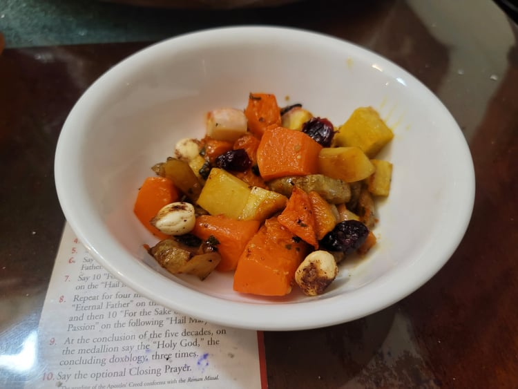

Maple-Sage Roasted Vegetables

Ingredients:
- 2 lb Winter squash, 1/2" cubed
- 1/2 lb Sunchokes, 1/2" cubed
- 1/2 lb Turnips, 1/2" cubed
- 1 Sweet potato, 1/2" cubed
- 2 tbsp Sunflower oil
- 1/8 tsp Salt
- 2 tsp Sage, chopped
- 2 tbsp Maple syrup
- 2 tbsp Maple vinegar or Apple cider vinegar
- 1 tsp Whole grain mustard
- Toasted corn nuts
- Dried cranberries
Instructions:
- Preheat the oven to 425 degrees Fahrenheit.
- Toss the squash, sunchokes, turnips, and sweet potato in a large bowl with the oil, salt, and sage. Place onto a baking sheet so that they are not touching and bake for about 30 minutes, shaking often, until the vegetables are tender.
- Combine the maple syrup, vinegar, and mustard into a bowl. Brush the mixture over the vegetables and return to the oven for 7 - 10 minutes.
- Remove from the oven and serve, garnished with the corn nuts and cranberries.